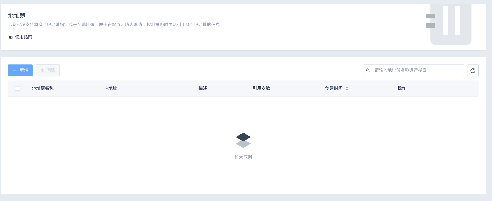
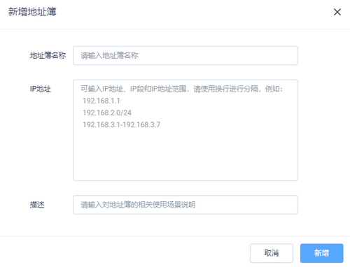
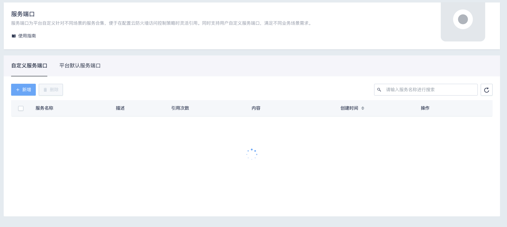

通用管理
地址簿
云防火墙支持将多个IP地址指定成一个地址簿，便于在配置云防火墙访问控制策略时灵活引用多个IP地址的信息。
操作步骤
- 在控制台产品服务列表打开 安全服务 中的 云防火墙 CFW 进入云防火墙控制台。
- 在云防火墙控制台左侧导航栏，单击安全策略 > 通用管理 > 地址簿。
- 在地址簿页面，单击新增。

- 在新增地址簿对话框中，按照以下步骤新增地址簿。

- 单击新增完成创建。
服务端口
在配置云防火墙访问控制策略时，自定义针对不同场景的服务合集叫做服务端口。服务端口支持用户自定义，满足不同业务场景需求。
说明：
如果使用平台默认服务端口，则无需进行该操作。
操作步骤
- 在控制台产品服务列表打开 安全服务 中的 云防火墙 CFW 进入云防火墙控制台。
- 在云防火墙控制台左侧导航栏，单击安全策略 > 通用管理 > 服务端口。
- 在服务端口页面，选择自定义服务端口。

- 在新增自定义服务端口对话框中，按照以下步骤新增自定义服务端口。
- 单击新增完成创建。
应用组
在配置云防火墙访问控制策略时，针对不同场景的进行自定义应用组合集叫做应用组。
操作步骤
- 在控制台产品服务列表打开 安全服务 中的 云防火墙 CFW 进入云防火墙控制台。
- 在云防火墙控制台左侧导航栏，单击安全策略 > 通用管理 > 应用组。
- 在应用组页面，查看应用组集合。